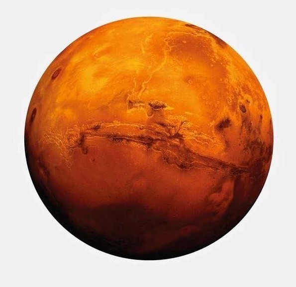
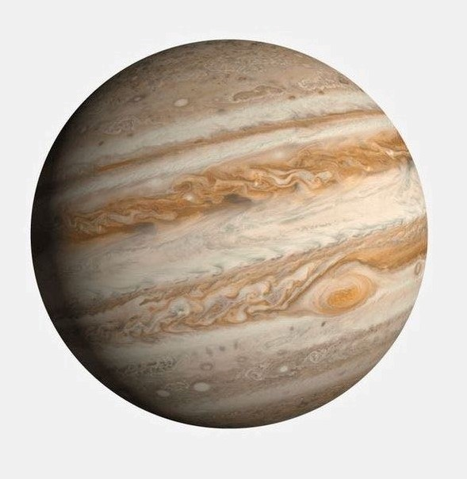

KTO BYŁ PIERWSZY W KOSMOSIE?
jurij aleksiejewicz gagarin - radziecki kosmonauta,
pierwszy człowiek w przestrzeni kosmicznej (1961), bohater związku radzieckiego, lotnik kosmonauta zsrr.
KTO BYŁ PIERWSZY NA KSIĘŻYCU?
neil armstrong, amerykański astronauta, jako pierwszy człowiek
20 lipca 1969 roku stanął na księżycu. był dowócą misji apollo 11.
ILU POLAKÓW BYŁO W KOSMOSIE?
w 1978 roku na pokładzie statku załogowego soyuz-30 poleciał pierwszy,
jak dotąd jedyny, polski astronauta – mirosław hermaszewski.
GALERIA ZDJĘĆ


MERKURY
Najmniejsza i najbliższa Słońca planeta Układu Słonecznego. Jako planeta dolna znajduje się dla ziemskiego obserwatora
zawsze blisko Słońca, dlatego jest trudna do obserwacji. Mimo to należy do planet widocznych gołym okiem i była znana już w starożytności.
Merkurego dojrzeć można jedynie tuż przed wschodem lub tuż po zachodzie Słońca.
Ukształtowanie powierzchni Merkurego przypomina Księżyc: są na nim liczne kratery uderzeniowe i pozbawiony jest on atmosfery.
Temperatura powierzchni waha się od −173 °C do 427 °C.
WENUS
Druga pod względem odległości od Słońca planeta Układu Słonecznego.
Jest trzecim pod względem jasności ciałem niebieskim widocznym na niebie, po Słońcu i Księżycu.
Jej obserwowana wielkość gwiazdowa sięga −4,6m. Ponieważ Wenus jest bliżej Słońca niż Ziemia,
zawsze jest widoczna w niewielkiej odległości kątowej od niego;
jej maksymalna elongacja to 47,8°C. Odległość Wenus od Ziemi zmienia się w zakresie od około 40 mln km do około 259 mln km.

ZIEMIA
Trzecia, licząc od Słońca, oraz piąta pod względem wielkości planeta Układu Słonecznego.
Pod względem średnicy, masy i gęstości jest to największa planeta skalista Układu Słonecznego.
Planeta uformowała się około 4,54 mld lat temu.
Ziemia jest jedynym znanym miejscem we Wszechświecie, w którym występuje życie,
jest zamieszkana przez miliony gatunków, w tym przez człowieka. Życie pojawiło się w oceanach
w ciągu pierwszego miliarda lat po uformowaniu się Ziemi.

MARS
Czwarta od Słońca planeta Układu Słonecznego. Krąży między orbitą Ziemi a pasem planetoid,
dzielącym go od orbity Jowisza. Planeta została nazwana od imienia rzymskiego boga wojny – Marsa,
ze względu na barwę, która przy obserwacji z Ziemi wydaje się rdzawo-czerwona
i kojarzyła się starożytnym Rzymianom z pożogą wojenną. Odcień ten bierze się od tlenków żelaza pokrywających powierzchnię.

JOWISZ
Gazowy olbrzym, największa planeta Układu Słonecznego. Piąta planeta w kolejności od Słońca.
Masa Jowisza jest nieco mniejsza niż jedna tysięczna masy Słońca, a zarazem dwa i pół razy większa niż łączna
masa pozostałych planet w Układzie Słonecznym. Wraz z Saturnem, Uranem i Neptunem tworzą grupę gazowych olbrzymów,
nazywaną czasem również planetami jowiszowymi.
Planetę znali astronomowie w czasach starożytnych, była związana z mitologią i wierzeniami religijnymi wielu kultur.
SATURN
Gazowy olbrzym, szósta od Słońca planeta Układu Słonecznego, druga po Jowiszu pod względem masy i wielkości.
Charakterystyczną jego cechą są bardzo wyraźne pierścienie, składające się głównie z lodu i w mniejszej ilości z odłamków
skalnych; inne planety-olbrzymy także mają systemy pierścieni, ale żaden z nich nie jest tak rozległy
ani tak jasny. W maju 2023 roku znanych było 146 naturalnych satelitów Saturna, najwięcej wśród planet.
URAN
Gazowy olbrzym, siódma od Słońca planeta Układu Słonecznego, trzecia pod względem wielkości i czwarta pod względem masy.
Nazwa planety pochodzi od Uranosa, greckiego boga, uosobienia nieba, ojca Kronosa
i dziada Zeusa. Choć jest widoczny gołym okiem podobnie jak pięć innych planet, umknął uwadze starożytnych
obserwatorów z powodu małej jasności i powolnego ruchu po sferze niebieskiej.
NEPTUN
Gazowy olbrzym, ósma, najdalsza od Słońca planeta w Układzie Słonecznym,
czwarta pod względem średnicy oraz trzecia pod względem masy. Neptun jest ponad 17 razy masywniejszy od Ziemi
i masywniejszy od swojego "bliźniaka" Urana, który ma masę prawie 15 razy większą od masy Ziemi.
Krąży wokół Słońca w odległości około 30 razy większej niż dystans Ziemia-Słońce. Nazwa pochodzi od rzymskiego boga
mórz Neptuna. Jego symbol astronomiczny to, stylizowany trójząb Neptuna.